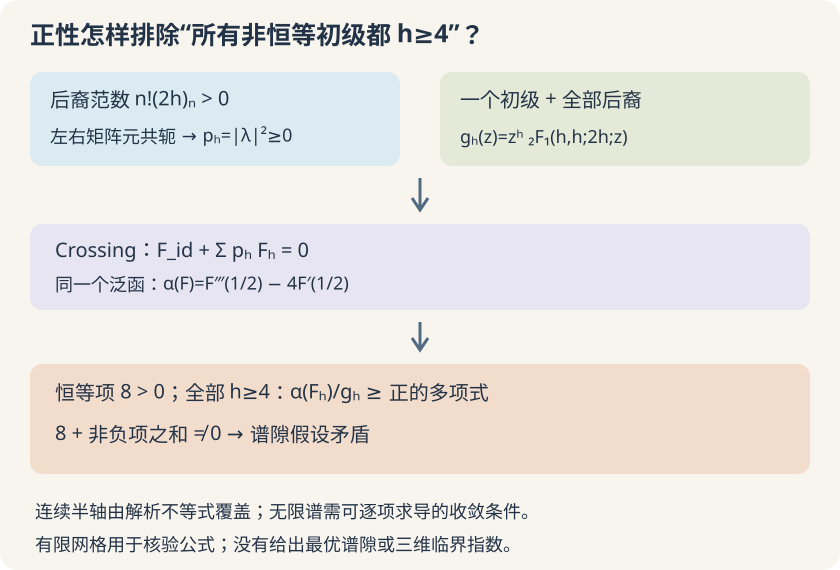

本页目录
基础衔接 13 · 共形块、正性与一个可以手验的排除证书
先修：对称性与关联函数、共形 Bootstrap。本讲只处理一维全局共形对称、相同 Hermitian 标量的四点函数。先算真正的共形块，再证明一个刻意宽松的谱隙限制；它不是三维 Ising 的最优数值界。
1. 正系数为什么有物理来由？
若一个态的范数平方可以为负，把它当作概率振幅会失去通常的解释。欧氏理论的反射正性要求：把一半空间中的算符组合反射并共轭到另一半，得到的二次型非负。在径向量子化中，这对应 Hilbert 空间的正范数。它是对理论的条件，不是“关联函数画出来大于零”就足够。
取一维共形代数的生成元 \(L_{-1},L_0,L_1\)，满足
初级态 \(|h\rangle\) 满足 \(L_1|h\rangle=0\)、\(L_0|h\rangle=h|h\rangle\)，范数为 1。后裔是 \(L_{-1}^n|h\rangle\)。用交换关系可归纳得到
\((a)_n=a(a+1)\cdots(a+n-1)\)。第一后裔的范数平方为 2h；h<0 就立即违反正性。h=0 的恒等表示有零范数后裔，应单独处理，不能直接向下面的超几何公式代零。
两个相同 Hermitian 外部算符在左右通道产生共轭矩阵元。把正交态插入中间，每个初级贡献的系数是 \(p_h=|\lambda_{\phi\phi h}|^2\ge0\)。不相同外部算符、负范数态或未经正确归一化的展开，未必有这一形式。
2. 一个初级态和全部后裔，合成一个共形块
将两个外部算符放在无穷远和1，初级算符放在z，三点函数的位置依赖为 \(\lambda_{\phi\phi h}(1-z)^{-h}\)。对z在0处求n阶导数，得到 \(\lambda_{\phi\phi h}(h)_n\)，这正是第n个后裔的矩阵元。左右各一个矩阵元，除以后裔范数，得到
可从递推实际计算。记第 n 项 \(t_n=z^{h+n}(h)_n^2/[(2h)_n n!]\)，则
每项为正，导数也可逐项计算。h=1 时系数为 \(1/(n+1)\)，所以
这个闭式是程序的第一份独立参照。截断本式 n，是少算一个初级的后裔；截断四点函数里的 h，是少放一些初级及其整族后裔。上一讲的普通二项式实验又是另一种近似。
3. 把待排除的假设写准确
固定外部维数 \(\Delta_\phi=1/2\)，采用上一讲的归一化
假设唯一零维贡献是已归一化的恒等块，其他有耦合的初级 h>0。取离散谱，假设 OPE 在中心附近正常收敛，允许下面三次逐项求导。连续谱版本还须把同样的求导交换条件写成谱测度的可积性要求，本讲不另建立它。
Crossing 是 \((1-z)G(z)-zG(1-z)=0\)。定义
待检验的谱隙假设是：所有出现在这次 \(\phi\times\phi\) OPE 中的非恒等初级都满足 h≥4。不是说整个理论不存在其他低维算符。
若同一个线性泛函 α 满足
则对 crossing 作用 α 得到“正数加非负数等于零”，矛盾。这里的“全部”不能换成有限网格。
4. 用块的微分方程，把三阶导数变成两个值
由超几何方程，或将上节递推逐项代入，可验证
在 \(z=1/2\)，它与它的一阶导数分别给
第二式来自求导后 \(g''\) 的系数 \(2z-3z^2-z^2\) 恰在中心消失。不能把只在中心成立的第一式当成全区间恒等式再求导。
现在取
恒等块立刻给出 \(\alpha(F_{\rm id})=8\)。对一般块，乘积法则给
（未写参数的值都在中心）。代入中心方程：
三阶导数变成两个正项级数的线性组合，更容易核验，但还没有证明所有 h 的符号。
5. 真正覆盖整个半轴的那一步
正项级数给出 \(g_h(z)>0\)，且
所以中心处 \(g_h'/g_h\ge2h\)。当 h≥4，\(C\ge12\)，系数 \(8C-8\) 为正，可以用导数比的下界：
再利用 h−3≥1：
每个允许块都严格为正，恒等块也为 8。只要逐项求导合法，谱隙假设就被排除：这次 OPE 必须存在至少一个非零系数、0<h<4 的初级。
这是一个完整但宽松的解析排除证书，没有找到谱，也不是最优界。对无限谱不能省掉收敛条件：在中心邻域正常收敛的解析展开可逐项求导，得到有限的收敛和；若各项非负，就不能抵消恒等项。OPE 收敛及谱尾估计的系统论证见文末原始论文。

6. 有余项界的实验怎样读？
先取 h=4、z=1/2、N=128，再取 h=1 用负对数闭式核对。保持 h=8，比较 z=0.5 与 0.9，观察同一阶数在不同位置的精度。最后改变 h，确认有限曲线只辅助阅读，第5节才覆盖整个 h≥4。
| 中心处的量 | h=1 | h=4 |
|---|---|---|
| \(g_h(1/2)\) | 0.693147181 | 0.224799205 |
| \(g_h'(1/2)\) | 2 | 2.560413009 |
| \(\alpha(F_h)\) | −10.454822556 | 97.630396120 |
| \(\alpha(F_h)/g_h\) | −15.083120654 | 434.300450275 |
| 第5节解析下界 | 不适用 | 136 |
无脚本参照：默认h=4、z=1/2，数值见表；恒等块泛函为8。h=8时α(F_h)≈364.904801176，除以块值约7311.536079235，第5节下界为4360。h=1的泛函值为负并不违反范数正性：要求的是p_h≥0，不是任意泛函对所有块都为正。
实验只支持 1≤h≤8、64≤N≤256、0.1≤z≤0.9。若 n≥N+1，则
相邻项比不超过 z。记首个未保留项为 \(t_{N+1}\)，块尾和与导数尾和满足
导数界在块项比上再乘导数权重的最大比。这些是实数运算下的级数余项界，不含双精度舍入。泛函误差用系数绝对值乘两种尾界相加控制。界面显示远小于机器精度的尾界，不意味着浮点结果也有那么多有效数字。
7. 两道迁移题
题一。 程序在 h=4、4.5、…、100 上都测得 α(F_h)>0，还缺什么才能作为排除证书？本讲如何处理 h>100 和网格之间？
从“抽样”补到“对全部”
缺少网格间符号控制、高维数尾部、浮点与块近似误差、对OPE求导的合法性。本讲直接证明对每个实数h≥4，α(F_h)/g_h的解析下界为正，同时覆盖网格间与无穷远。数值只核验公式。若改用数值优化得到的新泛函，必须重新建立全域控制，不能沿用本讲特定泛函的证明。
题二。 h=1的α(F₁)<0，是否意味着该表示有负范数？若允许某个OPE系数p_h<0，排除还能成立吗？
区分三个正性对象
不意味着。h=1的后裔范数n!(2h)_n都为正，共形块也为正；α是带符号导数组合，可以为负。排除只要求它对假设允许的h≥4为非负。若p_h可以为负，负系数乘正泛函值可以抵消恒等项，原矛盾失效。范数正性、OPE系数正性、特定泛函在特定谱区间上的正性不能混用。
速查与进一步阅读
正范数 → 后裔归一化 → 共形块 → 正OPE系数 → crossing → 泛函 → 连续允许谱的正性证明。本讲给出可核查的排除证书，但范围只有一维、外部维数1/2情形，不能代替高维块、自旋与混合关联函数的研究计算。
一般背景见 Simmons-Duffin，TASI讲义；OPE与共形块收敛、谱尾估计见 Pappadopulo等，OPE Convergence。本页特定泛函和宽松h<4界在正文自行推导，不宣称是原文的最优结果。来源核查：2026-09-08。